System Documentation
Music Tap
Music Tap is an expressive, wearable musical interface designed to turn the human body into a dynamic instrument. Built for fluid performance, this wearable device liberates creators from traditional studio constraints, allowing anyone to compose and perform music entirely on the go.
Music Tap is a second-generation design iteration of Music Tap, specifically developed to elevate the system's visual aesthetic, ergonomics, and overall User Experience (UX). While the first prototype successfull validated the underlying embedded architecture and interactive audio pipeline, this version shifts focus toward productization. By reimagining the form factor, Music Tap delivers a polished, visually striking wearable that makes human-computer interaction significantly more intuitive, comfortable, and seamless for the performer.
1. Overview and Concept
Traditional musical instruments and digital controllers often demand rigid postures, tying the performer to a desk, stand, or specific physical stance. Music Tap was developed to challenge these physical limitations. By centering the overall experience of the performer, the interface explores how assistive and wearable technology can make digital music creation more intuitive, accessible, and deeply personal.
This project sits at the intersection of human-computer interaction (HCI), wearable electronics, and product design. By prioritizing ergonomic adaptability, Music Tap expands the boundaries of electronic music performance, making it highly accessible for traditional musicians, physical performers, and users with diverse mobility needs alike.
This iteration represents a transition from a raw engineering prototype to a presentation-ready device, heavily prioritizing industrial aesthetics and user ergonomics. By refining the spatial placement and tactility of the custom input nodes, the structural layout significantly reduces cognitive load, making it much easier for performers to navigate the interface blindly for purely intuitive musical expression. The visual language was streamlined by cleanly integrating internal electronics, choosing sleek material finishes, and eliminating exposed wiring to establish a cohesive, professional product identity. Additionally, the structural footprint of the wearable componentry was streamlined to contour more naturally to the human body, drastically reducing physical fatigue while ensuring unrestricted movement across long-term sitting, standing, or active performances.
2. Architecture Development
Multiple jewel buttons, each encoded to a musical note in the C4 octave (as default), are attached to an outfit consisting of a full-sleeve shirt and a skirt that can be worn by a human user. Tapping on a jewel button will produce a sound (from the computer using the serial port) of the corresponding musical note. As well, both sharps and flats are present in the musical interface!
Music Tap can also switch between different octaves by toggling the two dark pink jewel buttons located on the lower back on the right side of the user:
- If the lower jewel button is pressed, all the musical notes in the interface decrease to an octave lower than the current octave setting
- If the upper jewel button is pressed, all the musical notes in the interface increase to an octave higher than the current octave setting
It is intended that only the right hand is used to toggle these two jewel buttons, hence they are placed in a location easily accessible by this hand.
The interface establishes a seamless data pipeline by splitting duties between local hardware sensing and host-side audio computation. The Arduino firmware handles real-time user input detection and, upon registering a touch event on a jewel button, immediately broadcasts a data package over a dedicated USB serial port. Concurrently, a host-side Python script relies on the serial module to actively listen to this inbound Virtual COM port stream. Executing the Python application alongside the active microcontroller creates a highly responsive communication loop where incoming serial triggers are instantaneously processed, commanding the pygame.mixer framework to generate and emit the corresponding musical note directly through the computer's audio system.
Demonstrating the exceptional architectural flexibility of this software pipeline, this exact same communication and playback ecosystem has been successfully deployed onto a ARM Cortex-M Dual-Processor Embedded Development Board, proving the system's cross-platform adaptability and readiness for diverse standalone environments.
The following discusses additions and improvements made to the Music Slap interface in order to create Music Tap.
- The cardboard puppet used to simulate a human being has been replaced by a human-like doll in order to accurately represent the interaction of the envisioned interface with a human user
- Each musical note has been allocated to a body part such as shoulders, thighs, hips, stomach, hand and knee for remembering the locations of musical notes easily
- The aluminium switches have been covered up with a shirt and skirt for a more aesthetic and finished look
- Each jewel button on the shirt and skirt is placed at the location of the aluminium foil switches underneath, hence indicating to the user where to press in order to produce the sound of the musical note
- The musical notes (jewel buttons) are placed in a manner on the interface to allow for a diverse set of choreographies with multiple different songs
- The pushbuttons that shifted the octaves have been replaced by two aluminium switches in order to include this feature on the user's body as well. These two switches are also indicated by jewel buttons on the shirt and are placed on the right lower back of the user in order to only allow the right hand to interact with these buttons
- The interface has been improved to consist of a complete musical scale
- The software has been improved to allow the user to play chords. By pressing on multiple shirt buttons at the same time, the musical notes corresponding to the pressed buttons are played in unison
The images below showcase the final artifact:
The natural music notes are represented with light pink jewel buttons on the shirt and skirt, whereas the sharp and flat music notes are presented by the dark pink jewel buttons on the shirt. The dark pink jewel buttons on the right lower back indicate the octave controls.
Note: Due to the limited amount of wiring available, the envisioned human-sized interface is produced at a smaller scale by utilizing a puppet to simulate the human user. This puppet allows to get a feel of the interaction.
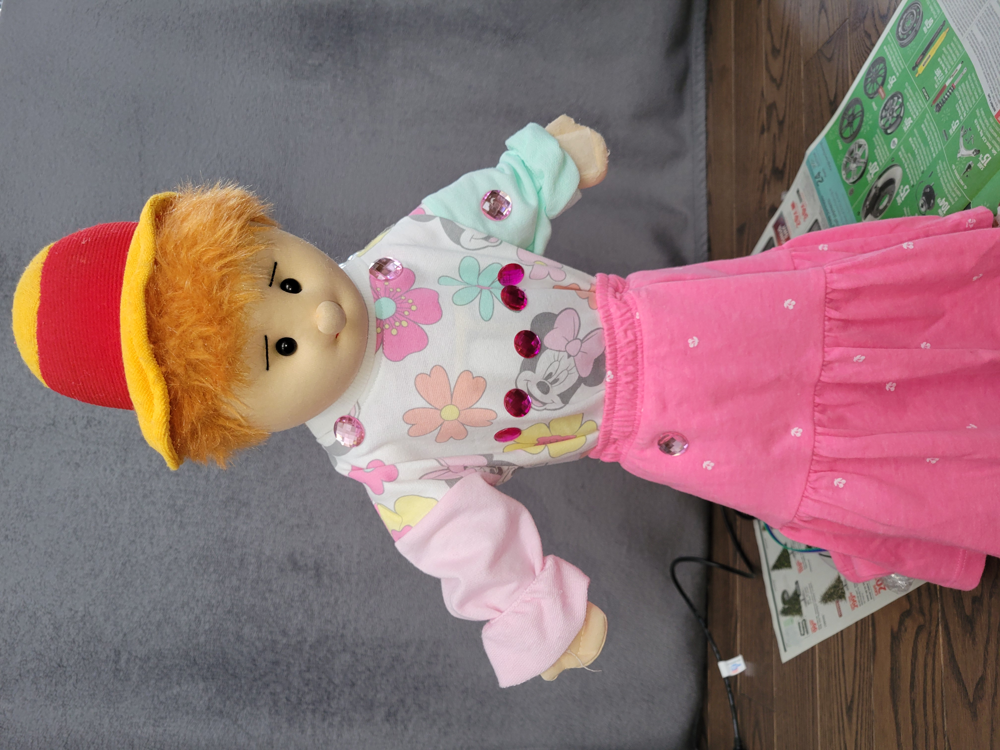
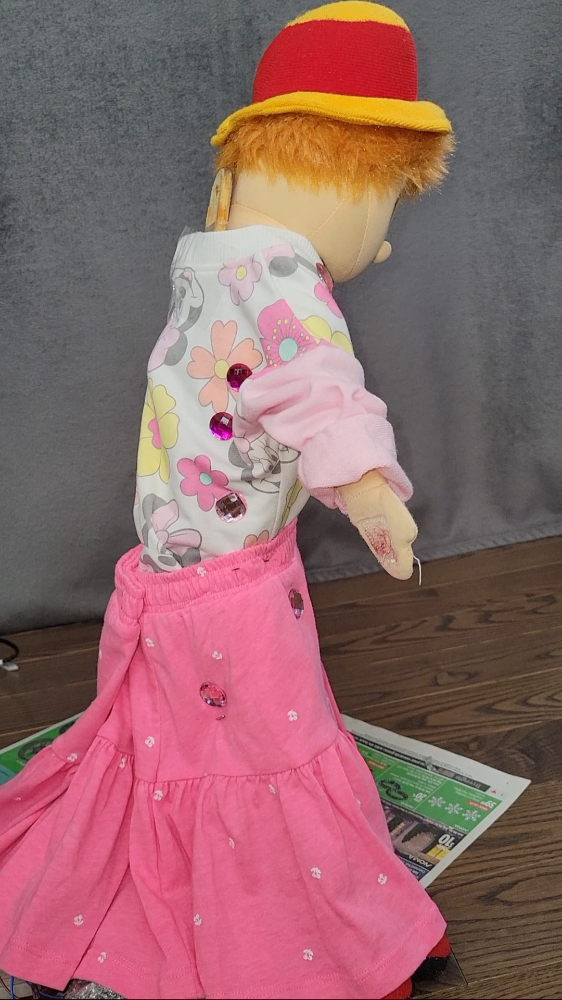
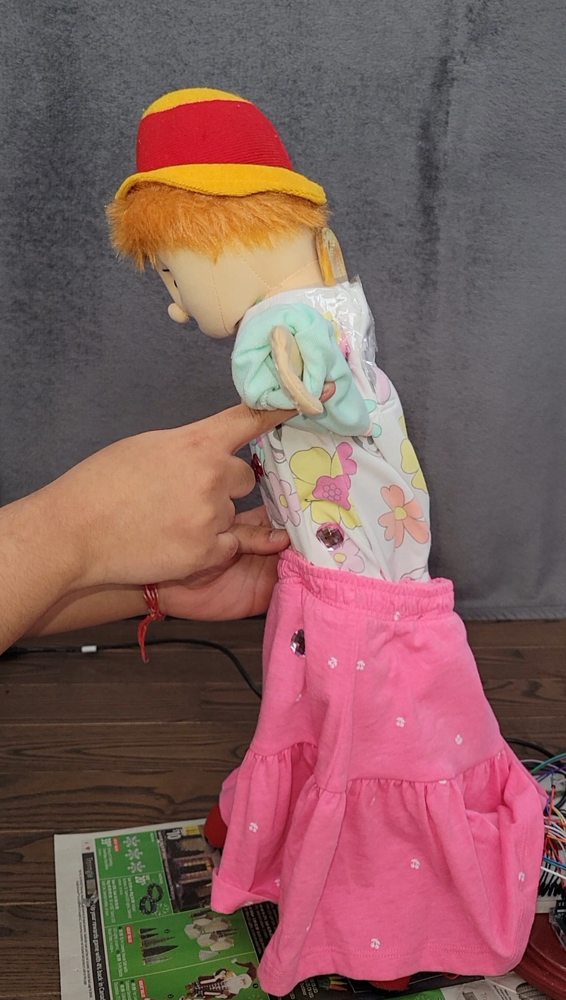
Below images showcase Music Slap's final artifact compared to Music Tap's.
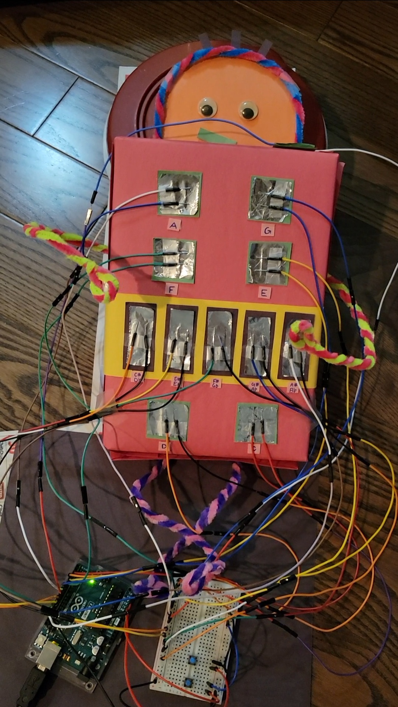
Music Slap
Music Tap
Comparing Music Slap and Music Tap:
| Music Slap |
Music Tap |
| Cardboard box puppet simulating human user |
Human-like doll used as a puppet to simulate human user |
| Simulated clothes via paper |
Consists of real clothes made out of fabric |
| Wiring and switches can be seen |
Wires and switches hidden under clothes and switches represented by jewel buttons |
| Pushbuttons used for octave controls |
Octave controls brought onto the user's body using switches, and jewel buttons utilized for switch indication on shirt |
| Not capable of chords |
Enables playing of chords |
| All musical notes on front upper body |
Each musical note mapped to a human body part |
| No embodiment of choreography |
Musical notes placed in a manner to enable different choreographies for various songs |
| Contained incomplete music scale |
Consists of a complete music scale |
The following image displays the concept development that took place for this project.
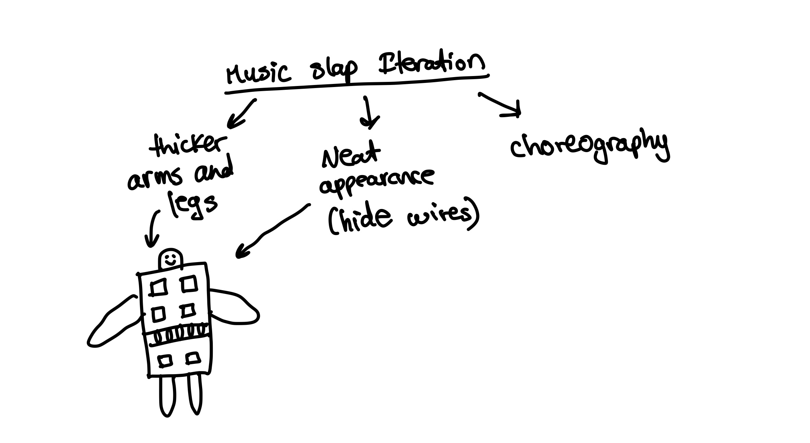
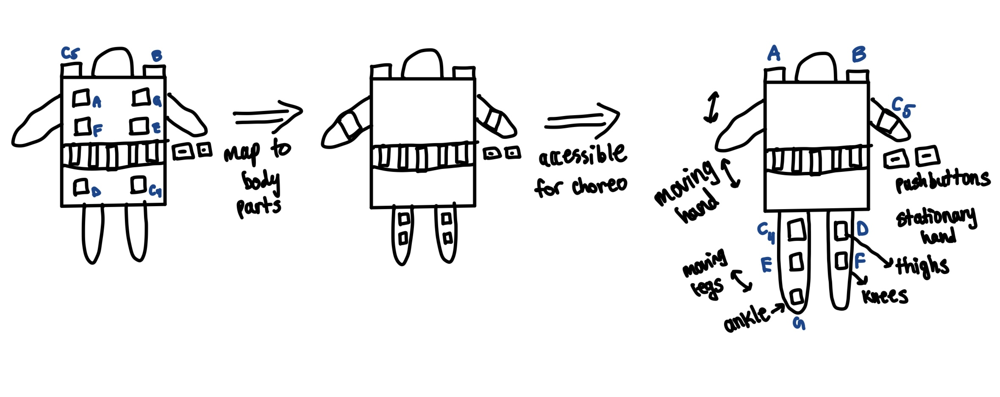
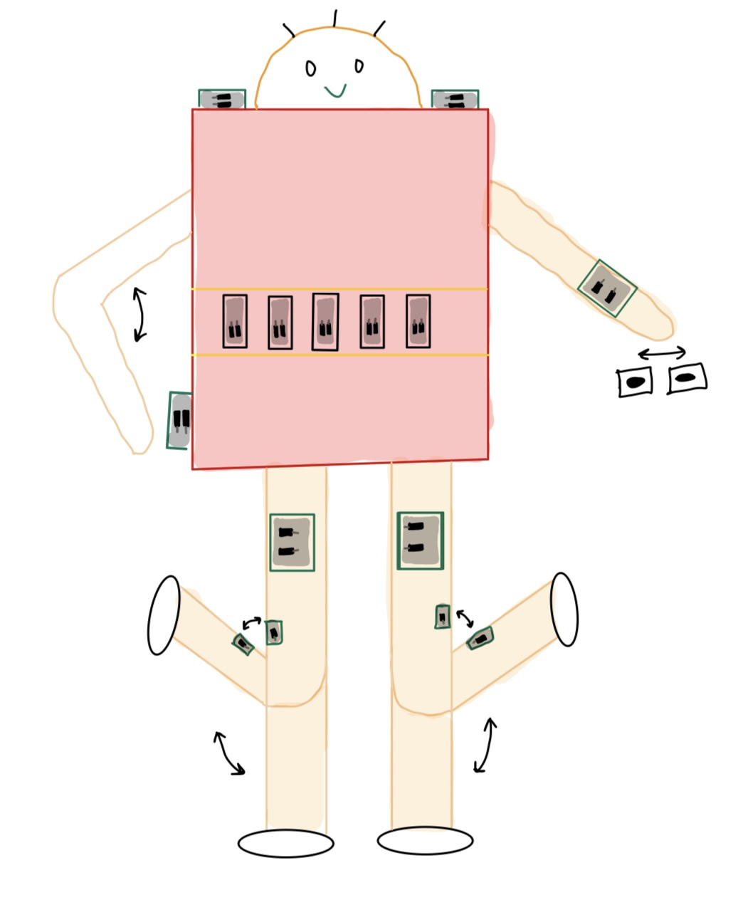
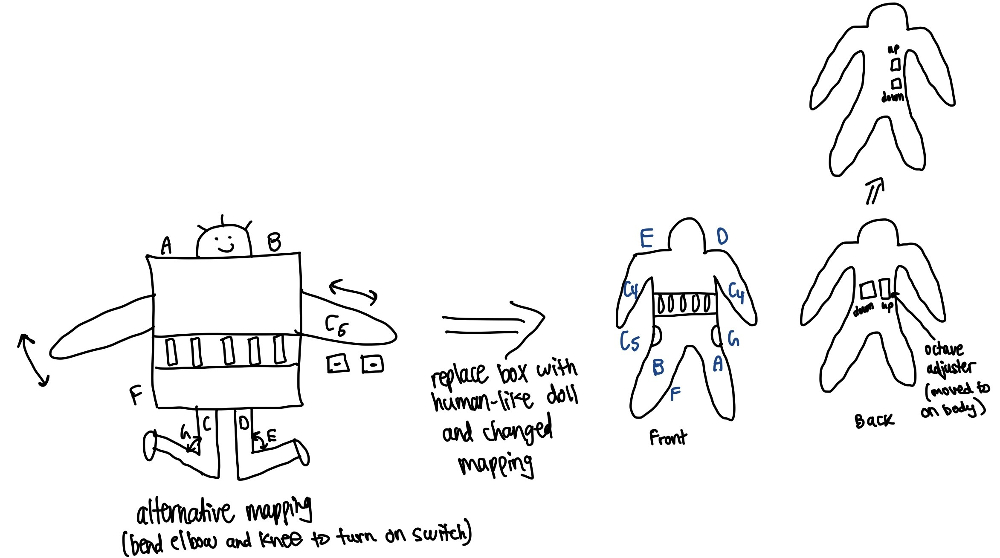
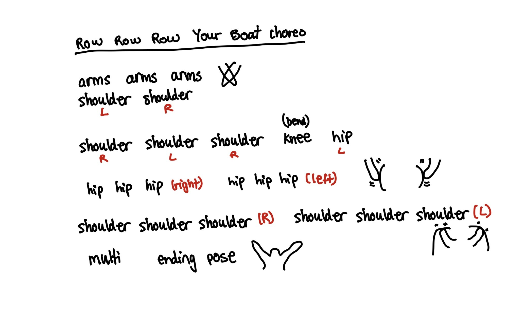
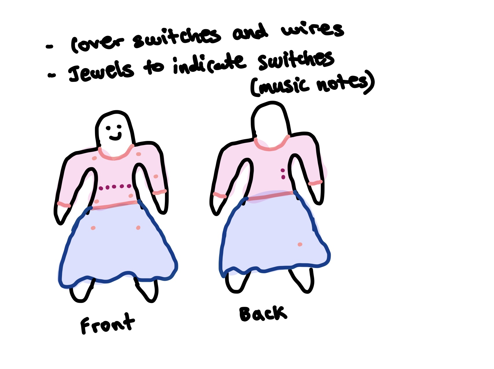
3. Hardware Logic
The system is powered by an Arduino Uno that handles real-time data processing and signal routing from a series of custom-built tactile switches strategically positioned across the wearable interface for maximum ergonomic accessibility. To ensure reliable performance during intense physical movement, individual switch inputs are wired directly to separate digital pins. This configuration provides distinct electrical isolation and zero-latency hardware debouncing, guaranteeing crisp, reliable note triggering regardless of the performer's body position.
The technical architecture was heavily ruggedized by re-engineering the physical housing to safely enclose the Arduino Uno and routing circuitry, effectively protecting critical connection points from the mechanical stresses of continuous human motion. Internally, the wiring matrix was upgraded to maintain strict electrical isolation, ensuring the custom tactile switches deliver consistent, zero-latency note triggers across the UART serial-over-USB connection. To match these hardware enhancements, the host-side Python script and pygame.mixer pipeline were optimized to maintain an ultra-responsive audio output, establishing a seamless loop between tactile physical feedback and real-time audio playback.
Circuit Schematic Diagram:
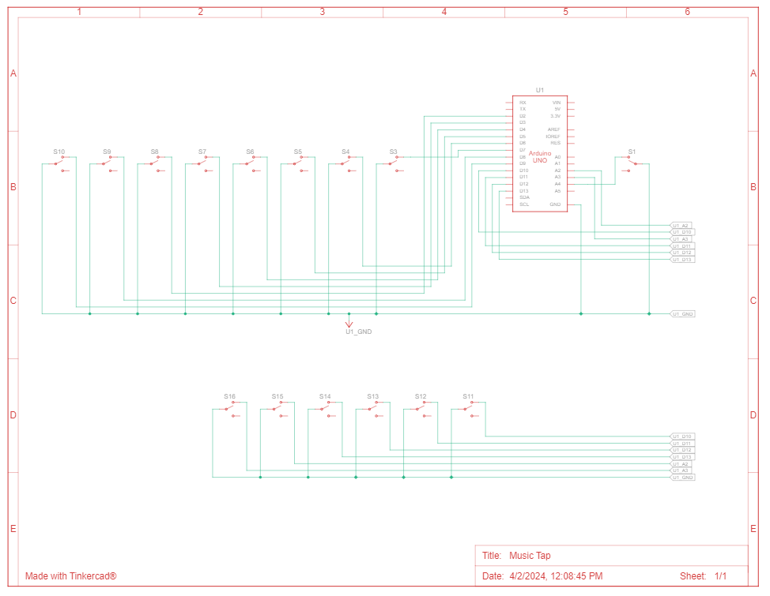
4. Core Firmware Implementation
The system runs on a lightweight embedded C/C++ firmware architecture that continuously polls the digital input pins to deliver a highly responsive experience. Within the main execution loop, efficient state change detection logic tracks user inputs and immediately broadcasts performance data over a serial connection. To handle audio generation, a custom Python wrapper monitors this serial bus in real time, capturing data on which note was triggered and instantly playing the corresponding high-quality audio file using the pygame.mixer library. This optimized software pipeline eliminates perceptible latency, allowing performers to effortlessly trigger complex melodic arrangements through intuitive body movements.
Building upon the system's firmware foundations, the host-side Python script and pygame.mixer pipeline were optimized to maintain an ultra-responsive audio output, establishing a seamless loop between tactile physical feedback and real-time audio playback. The lightweight embedded C++ environment handles continuous digital input pin polling and rapid state change detection, which is instantly streamed through the serial pipeline. By refining the script's event-handling logic, the interactive audio engine completely minimizes processing delays. This software optimization successfully mirrors the hardware's enhancements, ensuring that the instant a user blindly navigates and interacts with the updated spatial nodes, the corresponding audio samples play back flawlessly.